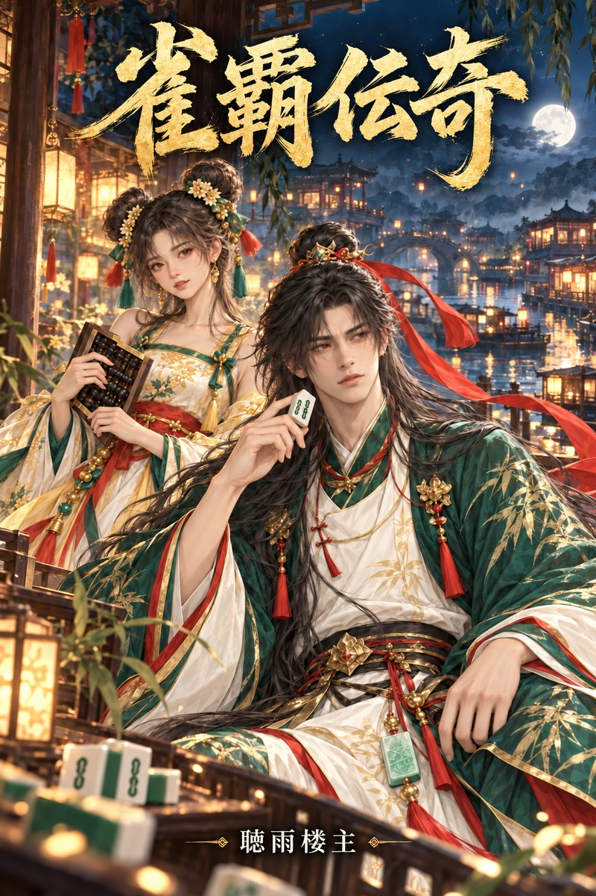

原作ゲーム
『雀覇麻雀』
本作は麻雀ゲーム『雀覇麻雀』を題材にしています。青嵐、月寧、金獅、竹墨ら作中の人物がゲームに登場し、あなたと同じ卓を囲みます。近日配信予定。
アニメ化
『雀覇伝奇』
同名のショートアニメを制作中です。近日公開予定、どうぞお楽しみに。
雀道が世の理を定める世界。争いを裁くのは刀剣ではなく、一卓の公道卓だった。三者が立ち会い、牌譜は万人に開かれ、勝敗こそが公正の証となる。
十年前、天元雀会を前に開かれた公道局――牌の勝敗で争いを裁く対局で、麻雀の師・青遠山の牌山から、余分な中が一枚見つかった。一夜にして、誰より潔白だった手は、誰より汚れた手と呼ばれるようになる。父の死後、息子の青嵐は形見の白を十年ものあいだ隠し持ち、生涯二度と牌には触れまいと誓った。
それでも運命は、青嵐を雲川へと導く。三色川のほとりでは、染物工房の娘たちが水路を守るため、一局の勝負にすべてを託していた。だが、その卓にはイカサマを働く者がいる。代打ちとして席に着いた青嵐が暴いたのは、一つの仕掛けだけではない。十年ものあいだ闇から彼を見つめていた「鬼手」だった。
やがて彼のもとに、仲間が集う。算盤を手放さず、人情より帳簿を信じる月寧は、点数と牌を確かめる裁定役「司籌」。獅子頭の咆哮をしのぐ大声と、誰より熱い心を持つ金獅は、獅子舞一座の座長。そして、すべての対局を書き留めながら、十年前のただ一局について沈黙を守ってきた「牌史」の竹墨。
伝説によれば、雀神はかつて百三十六枚の天牌を人の世に撒いたという。天牌は誰にも勝ちを授けない。ただ、その牌を使って打たれた一局一局を「覚えている」。青嵐の手にある白は、何を覚えているのか。
牌に触れぬと誓った男が、正々堂々の一局で、父の汚名をそそぐ。